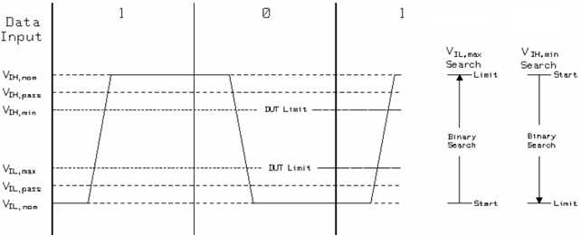
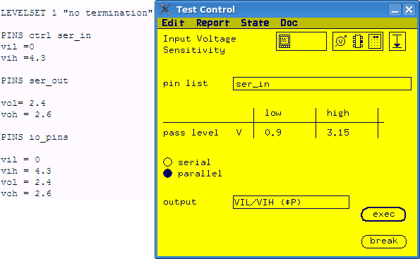

Input Voltage Sensitivity conversion
The input voltage level test can be pass/fail test or value test.
About this task
For pass/fail test, you can convert it to an
ac_tml.AcTest.functionalTest by changing the value of Vil and Vih to the pass level in the test function.
For value
test, you can convert it to an ac_tml.AcTest.parametricFunctionalTest test
method. Firstly, you need to define a level spec to control the low level input voltage and a
level spec to control the high level input voltage. Then in the
ac_tml.AcTest.parametricFunctionalTest test method, you can use the specs as
the parameter to shift. If both Vil and Vih are tested in
input voltage sensitivity, you need to convert it to two
ac_tml.AcTest.parametricFunctionalTest test methods, one for
Vil measurement and one for Vih measurement.
In value test, Input Voltage Sensitivity function varies the value of Vil/Vih and executes a functional test for each value. It tries to find out the maximum value of Vil and minimum value of Vih that make the functional test pass.
Procedure
- Define a spec to control Vil and a spec to control Vih.
- Calculate the range of the spec to make sure the Vil and
Vih are shifted the same as in the test function.
The range of the Vil is from the nominal low level setup to the nominal high level setup plus the minimum swing.
The range of the Vih is from the nominal high level setup to the nominal low level setup minus the minimum swing.

- Enter the parameter values for
ac_tml.AcTestparametricFunctionalTest. Only spec search part of the test method is needed, so you can ignore the parameters for customized functional test.resultPinList
pin list in the test function
resultPinListMode
serial or parallel in the test function
spec
The spec defined to control Vil and Vih
setupPinList
pin list in the test function
setupPinListMode
serial or parallel in the test function
method
binary
start
the start value calculated in last step
stop
the stop value calculated in last step
step
omit
resolution
omit
passMin
for Vil test, the low pass level value in the test function
for Vih test, omit
passMax
for Vih test, high pass level value in the test function
for Vil test, omit
Examples
Description
The following example shows how to convert an Input Voltage
sensitivity test to ac_tml.AcTest.parametricFunctionalTest. The level set used
in the example is listed on the left side.

In this example, a parallel input voltage sensitivity test is done for the pin
group ser_in. Both low level voltage sensitivity and high level voltage
sensitivity are measured. So the test function needs to converted to two
ac_tml.AcTest.parametricFunctionalTest test methods. The limit for low level
voltage measurement is 0.9 V and the limit for high level voltage measurement is 3.15
V.
Vil measurement conversion
- Define a spec VIL to control
Vil:
PINS ser_in Vil = VIL
- The search range of Vil in the test function is from the nominal
Vil defined in the level setup to the nominal Vih
defined in the level setup plus 200 mV (minimum swing).
In this example, vil = 0 and vih = 4.3. So the search range of VIL is from 0 V to 4.5 V.
- Enter the parameter values for
ac_tml.AcTest.parametricFunctionalTest.resultPinList
ser_in
resultPinListMode
parallel
spec
VIL
setupPinList
ser_in
setupPinListMode
parallel
method
binary
start
0
stop
4.5
step
resolution
passMin
0.9
passMax
Vih measurement conversion
- Define a spec VIH to control
Vih:
PINS ser_in Vih = VIH
- The search range of Vih in the test function is from the nominal
Vil minus 200mV(minimum swing) to the nominal Vih.
In this example, vil = 0 and vih = 4.3. So the search range of VIH is from -0.2 V to 4.3 V.
- Enter the parameter values for
ac_tml.AcTest.parametricFunctionalTest.spec
VIH
resultPinList
ser_in
resultPinListMode
parallel
setupPinList
ser_in
setupPinListMode
parallel
method
binary.
start
-0.2.
stop
4.3
step
resolution
passMin
passMax
3.15
Functional changes
- Introduced before SmarTest 6.3.2